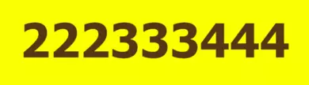

Tutaj "GRUNIA" wita CIEBIE! Marzenia Twe,
u NAS są REALNE!!


Pory roku, miejsca pobytu, albo spodziewane atrakcje? Czyż tylko takie są problemy TWOJEGO wyboru!? Czas więc zaufać "GRUNI"!!! Wszystkie te WYMARZONE chwile, zapewnimy TOBIE nawet przez CAŁY rok!!! Nie wierzysz?!! BŁĄD!!! Jednakże MY rozwiążemy każdy TWÓJ dylemat!!!
Bo gdyby też drzewiej Aleksander Macedoński, skorzystał był bowiem z usług "GRUNI", nie musiałby wonczas - w czoła swego perlistego potu strugach! - węzła gordyjskiego, z mozołem tępym mieczem swym rozcinać. Jak również uroków ŚWIATA tego, własnym swoim żywotem młodym - suto przedwcześnie opłacić!
Ikar też kark swój był skręcił, bo ongiś TYLKO sobie zwykł ufać!! A gdyby wtedy zaufał "GRUNI", do dzisiaj z NAMI latałby po tym ŚWIECIE!! Nie podążaj także więc i TY, tą drogą błędów i wypaczeń, bo jej waluta, którą oni tak lekkomyślnie opłacili swoje pragnienia poznawania GO, nigdy nie będzie wymienialna w kasie "GRUNI"!!

Zatem odrzuć wszelkie swoje rozterki oraz wahania, i bez zbędnej zwłoki, przestąp NASZE gościnne progi - a z całą pewnością również także i Ty, NIE ZAWIEDZIESZ SIĘ!! Czemu? Ponieważ to właśnie TUTAJ - zawsze po każdorazowej konsultacji z "GRUNIĄ"! - ustalane jest, by nawet deszcz ZAWSZE padał do góry, jeśli tylko takie są życzenia NASZYCH kontrahentów!! A więc i TY teraz zaufaj "GRUNI", by ich liczne grono, kolejnego - i równie zadowolonego!! - uczestnika zyskało. Poświęcając chwilę swojego czasu tym stronom, z pewnością zyskasz tygodnie - satysfakcjonującego nie tylko CIEBIE! - relaksu w realizacji własnych MARZEŃ!!